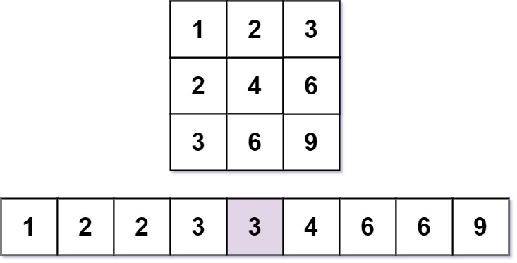

668. 乘法表中第k小的数
题目与约束
几乎每一个人都用 乘法表。但是你能在乘法表中快速找到第 k 小的数字吗？
乘法表是大小为 m x n 的一个整数矩阵，其中 mat[i][j] == i * j（下标从 1 开始）。
给你三个整数 m、n 和 k，请你在大小为 m x n 的乘法表中，找出并返回第 k 小的数字。
示例 1：

输入：m = 3, n = 3, k = 5
输出：3
解释：第 5 小的数字是 3 。
示例 2：

输入：m = 2, n = 3, k = 6
输出：6
解释：第 6 小的数字是 6 。
提示：
-
1 <= m, n <= 3 * 104 -
1 <= k <= m * n
核心不变量
记
count(x)为乘法表中小于等于x的元素个数，则count(x)关于x单调不减；第k小的数就是使count(x) >= k成立的最小x。
完整推导
思路推导
-
痛点：矩阵太大，不能真的生成再排序。
m, n可达3*10^4，乘法表最多9*10^8个元素，全部生成排序必然超时超内存。 -
换个视角看「第 k 小」。与其去找，不如问：给定一个数
x，乘法表里有多少个数 小于等于x？这个计数函数count(x)随x增大而单调不减。于是「第k小的数」= 使count(x) >= k成立的 最小x，可以在值域上二分。 -
O(m) 计算 count(x)。第
i行是i, 2i, 3i, …, n*i，其中不超过x的个数为min(n, x // i)。对i = 1..m累加，即count(x) = Σ min(n, x // i)。列方向同理，所以可令m <= n，只枚举较小的那一维，复杂度更优。 -
二分答案。值域
[1, m*n]，每次取mid，若count(mid) >= k则答案不超过mid（收缩右界），否则答案更大（左界右移）。结束时lo即答案。
小例子：m = 3, n = 3，x = 3 时 count = min(3,3/1)+min(3,3/2)+min(3,3/3) = 3+1+1 = 5，达到 k = 5，而 x = 2 时 count = 2+1+0 = 3 < 5，故答案是 3 ✓。
Java 实现（二分答案）
class Solution {
public int findKthNumber(int m, int n, int k) {
// 让 m 成为较小维度，减少每次计数的枚举量
if (m > n) {
int t = m;
m = n;
n = t;
}
int lo = 1, hi = m * n;
while (lo < hi) {
int mid = lo + (hi - lo) / 2;
if (count(m, n, mid) >= k) {
hi = mid; // 答案在 [lo, mid]
} else {
lo = mid + 1; // 答案在 [mid+1, hi]
}
}
return lo;
}
// 统计乘法表中 <= x 的元素个数
private int count(int m, int n, int x) {
int cnt = 0;
for (int i = 1; i <= m; i++) {
cnt += Math.min(n, x / i);
}
return cnt;
}
}
C++ 实现
#include <algorithm>
using namespace std;
class Solution {
public:
int findKthNumber(int m, int n, int k) {
if (m > n) swap(m, n); // 枚举较小维度
int lo = 1, hi = m * n;
while (lo < hi) {
int mid = lo + (hi - lo) / 2;
long long cnt = 0;
for (int i = 1; i <= m; ++i) {
cnt += min(n, mid / i);
}
if (cnt >= k) hi = mid;
else lo = mid + 1;
}
return lo;
}
};
Python 实现
class Solution:
def findKthNumber(self, m: int, n: int, k: int) -> int:
if m > n:
m, n = n, m # 枚举较小维度
lo, hi = 1, m * n
while lo < hi:
mid = (lo + hi) // 2
cnt = 0
for i in range(1, m + 1):
cnt += min(n, mid // i)
if cnt >= k:
hi = mid
else:
lo = mid + 1
return lo
复杂度
- 时间：O(min(m,n) · log(mn))。二分约
log2(mn)轮，每轮枚举较小维度 O(min(m,n)) 行。 - 空间：O(1)。只用了常数个整型变量。
- 边界取
lo < hi而非<=：这是「找最小可行值」的二分模板，返回lo；若写成<=需要另设结果变量，容易出错。 count用除法而非乘法：x / i直接得到第i行不超过x的个数，再与n取min，注意乘法i * n可能溢出而除法不会。- 未交换 m、n：不交换也能过，但枚举了较大维度；交换后每轮计数更省。
- 溢出：
hi = m * n <= 9*10^8，count累加不超过m*n，都在 32 位有符号整数范围内，但中间量建议留意不要额外相乘。 - 本质是「第 k 小 + 单调计数」：同类题如「有序矩阵中第 k 小的元素」「分割数组的最大值」都用二分答案 + 计数/可行性判定，是重要模板。